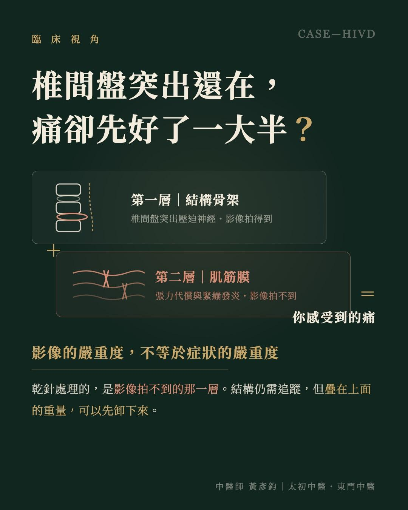
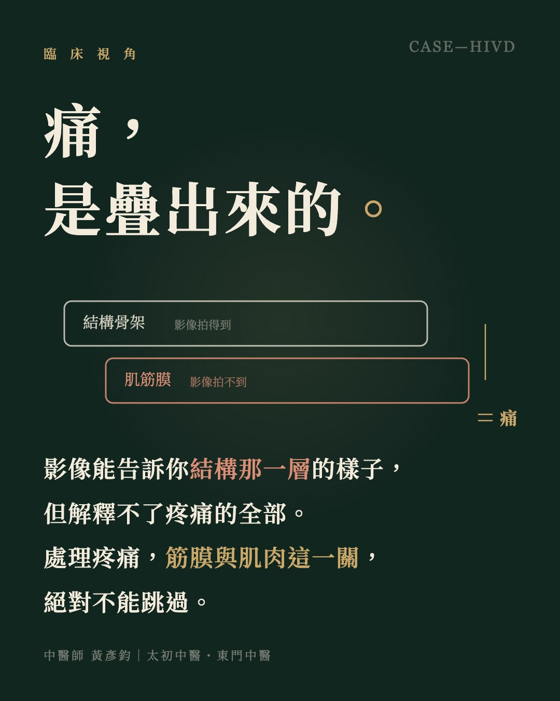

椎間盤突出還在，痛卻先好了一大半？
【椎間盤突出還在，痛卻先好了一大半？】－談疼痛的疊加層次
「醫師，為什麼只是針了一次，前後差這麼多？」今天的診間，這位患者把同一個問題，前後問了兩次。
時間拉回上週初診。雙側臀部一路牽連到大腿、小腿的麻刺疼痛，已經持續三個月，多方治療都沒有明顯改善；近兩週開始，晨起還合併出現麻電感，走路與日常生活都受到影響，初診時聽到的原話是：痛不可言。當時 MRI 還在排隊，靠著復健電療、拉腰與止痛藥控制症狀。
初診那天，做了一次乾針。
今天回診，患者說針完回去的隔天，麻電感與麻刺感幾乎消失；這一週下來，雙臀連下肢只剩痠痛感，左側比右側明顯。而排到的 MRI 也出爐了：腰椎第 3-4、4-5 節椎間盤突出，影像上確實壓迫到神經。
於是出現了這個耐人尋味的對照：突出還在、壓迫還在，症狀卻已經天壤之別。這正是患者連問兩次的原因，也是今天想談的主題。
▍疼痛，是好幾層疊加的總和
臨床上的疼痛，很少只有單一來源。以這個案例來說，至少疊著兩層。
一層是結構骨架。腰椎椎間盤突出壓迫神經，這是影像上看得到的事實，會造成疼痛與神經學症狀。
另一層是肌筋膜。長期的張力代償、肌群使用不當所累積的緊繃與發炎，會形成一張「牽連、抑制、代償」互相綁在一起的網絡，疊在結構問題之上，把症狀放大。
乾針處理的，是第二層。把肌筋膜的限制解開之後，身體得到修復的空間，於是在結構因素仍然存在的情況下，症狀先大幅緩解了下來。
而臨床上最常見的情況是：大家盯著影像上的第一層，卻跳過了第二層。
▍影像，拍不出疼痛的全部
這個案例也再次印證一件臨床上反覆看見的事：影像的嚴重度，與症狀的嚴重度，常常不相等。有人影像上的突出嚇人，日常卻幾乎無感；也有人影像只有輕度變化，疼痛卻排山倒海。因為影像拍得到骨架與椎間盤，拍不到肌筋膜的張力，更拍不到疼痛在身體裡疊加的方式。
所以拿到報告時，與其只問「影像有多嚴重」，更值得問的是：「我的症狀，有多少來自影像上的那一層？」
當然，結構的壓迫仍然存在，這位患者的影像仍需持續追蹤，後續治療也會繼續進行；若出現肌力快速減退、大小便功能異常等神經學警訊，更需要立即積極處理。乾針解開的是其中一層，不是全部。
💡 臨床思路總結
疼痛是疊加的總和：骨架結構是一層，肌筋膜是一層，各自有對應的處理方式。影像能告訴你結構那一層的樣子，但解釋不了疼痛的全部。
所以，處理疼痛，筋膜與肌肉這一關，絕對不能跳過。
在被影像上的「突出」與「退化」嚇住、以為只能與疼痛共存之前，值得先確認一件事：肌筋膜那一層，處理過了嗎？臨床上許多拖了很久的疼痛，卡住的往往正是這最容易被跳過的一關。
（以上為單一個案的治療經過，實際療效因個人狀況而異，仍需由醫師評估。）
太初中醫診所 東門中醫診所
中醫師 黃彥鈞
#椎間盤突出 #坐骨神經痛 #乾針 #慢性疼痛

